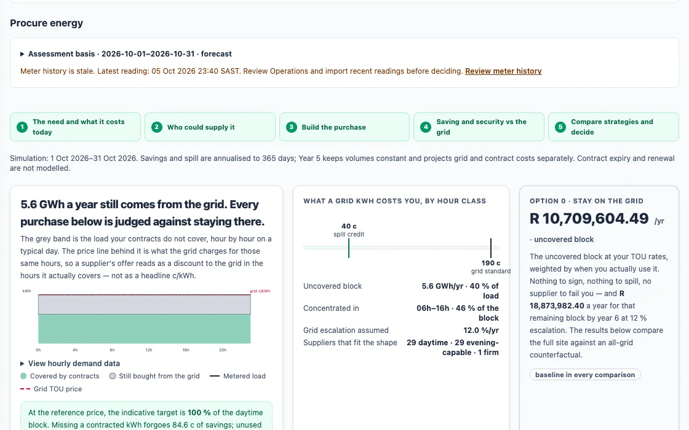
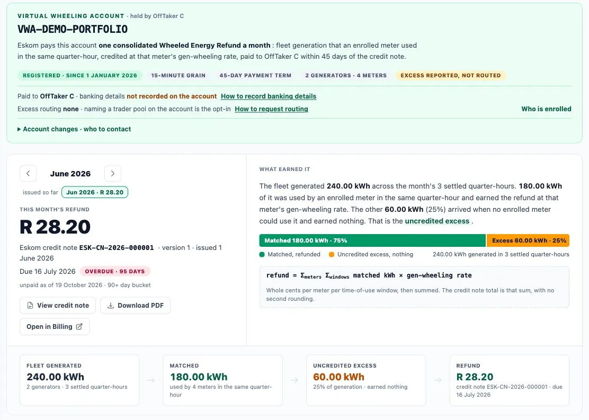
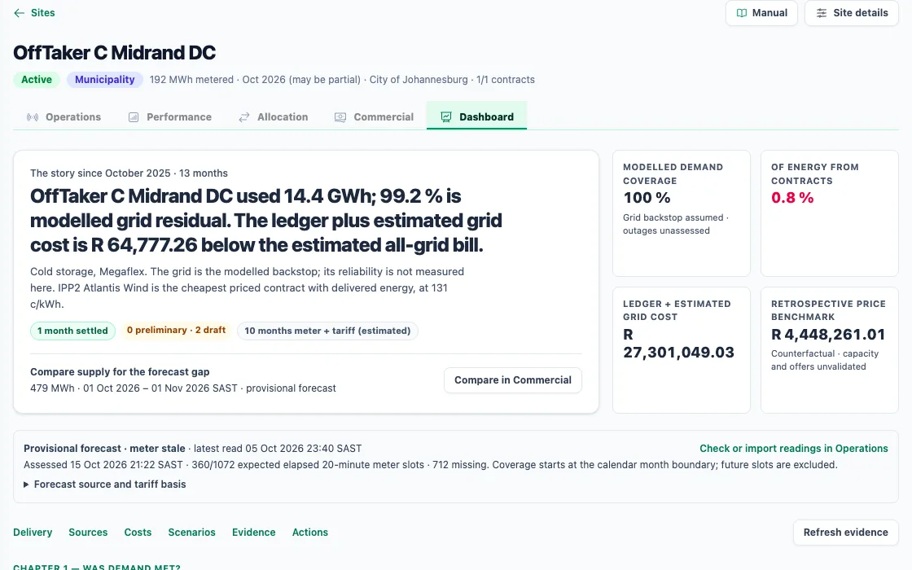
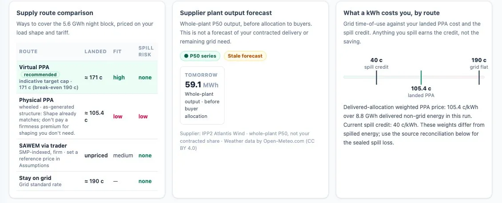

For large off-takers on a TOU tariff
Pay less, and greener.
Are you paying less, and greener, than buying everything from the grid, and what should you do next? Webill Green links your meter readings, contracts and costs, shows the landed cost of every kilowatt-hour with the arithmetic, reconciles Virtual Wheeling refunds meter by meter and compares every new option with staying on the grid.
What a wheeled kilowatt-hour really costs.
A contract price is a sticker. By the time a kilowatt-hour reaches your meter it has lost some of itself on the wires and picked up network charges. Landed cost is the honest number to hold against the grid.
Compare with the grid in
Landed cost at your meter
- Contract price85.0 c
- After network losses88.0 c
- Network charges+ 15.0 c
- Landed cost103.0 c
- Standard grid tariff128.0 c
- Against the gridSaves 25.0 c
- Over-contracting: each unused kWh costs63.0 c
Worked example: 85 ÷ 0.966 + 15 ≈ 103 c/kWh against a standard rate of 128 c, about a fifth off. Grid rates used here: peak 210, standard 128, off-peak 95 c/kWh; your own come from Eskom's effective-dated tariff and loss-factor tables.
Every option, compared with staying on the grid.
The Procurement Desk prices doing nothing first, on your own load and tariff. Every supplier, shape and contract is then held against that number, at a cautious P90 and in year five as well as today.
- 1The need, and today's costOption 0: stay on the grid, priced on your own load
- 2Who could supplyIPPs and traders whose hours fit yours
- 3Build the purchaseVolume, shape, price and term, physical or virtual
- 4Saving and securityAgainst the grid, at P90 and in year five
- 5Compare and decideStrategies side by side, then a proposal
A year's procurement, counted once
| Line | Amount |
|---|---|
| Contracts, including R 500,000 of spill | R 7,000,000 |
| Leftover grid supply | R 3,000,000 |
| Total spend | R 10,000,000 |
| All-grid bill for the same load | R 12,000,000 |
| Net saving | R 2,000,000 |
The R 500,000 of spill is already inside the contract cost; it is not subtracted twice.

Virtual Wheeling refunds, matched every 15 minutes.
Eskom pays one consolidated Wheeled Energy Refund a month, within 45 days: fleet generation that an enrolled meter used in the same quarter-hour, at that meter's gen-wheeling rate. How the energy is spread across your meters decides how much of it earns a refund.
One standard quarter-hour. Your generators produced 100 kWh; the refund rate is R 0.50 a kWh.
Spread the generation by
Meter A
Meter B
- Matched in the same quarter-hour90 kWh
- Uncredited excess, earns nothing10 kWh
- RefundR 45.00
One quarter-hour, worked through. The dashed line in each glass is that meter's use. Refund = Σ meters Σ windows of matched kWh × gen-wheeling rate, in whole cents per meter per TOU window.
One account, many generators, many meters.
The Virtual Wheeling account shows what earned the month's refund, the uncredited excess, Eskom's credit note and its 45-day aging, beside the formula that produced the figure.
- Matched at 15-minute grain, never on monthly totals
- Batteries enrol as pseudo-meters and take part in the fill
- Excess can be routed to a trader pool instead of earning nothing
The monthly refund run is started by a person today

Your electricity diary.
Each site tells one story, from commissioning to now: was demand met, what did it cost, and what should you do next. The grid's share is shown for what it is, a calculated remainder and not another meter reading.
- Demand coverage and the energy that came from contracts
- Ledger plus estimated grid cost against the all-grid bill
- A stale meter is flagged before any Rand figure is shown

What a kWh costs you, by route.
A virtual PPA, a wheeled physical PPA, the wholesale market through a trader, or staying on the grid: each route is priced on your load shape and tariff, with its fit and its spill risk beside the landed cost.

Greener, and able to prove it.
- A dual-method Scope 2 emissions statement, location-based and market-based
- Certificates accrued from FINAL settled energy and retired in your name
- One invoice per counterparty, with the green statement beside it
- A renewable electricity certificate does not reduce carbon tax. How carbon works on Webill Green
Bring your sites to the demo world.
Or keep reading: the evidence chain, and the market behind your tariff.